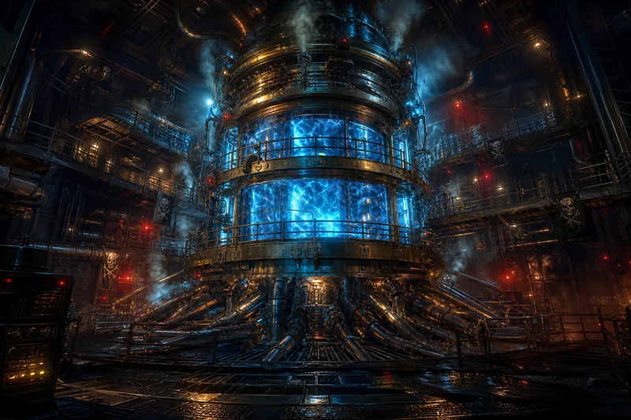

A massive cylindrical containment chamber — brass rings and steel bands holding together what God meant to keep apart. Inside: deep blue plasma swirling like a hurricane in a bottle. The plasma is fusion — hydrogen atoms dying so the ship can live. The containment field was rated for a naval corvette. Silver put it in a galleon. The math doesn't work. The engine doesn't care about math.
Energy conduits radiate outward from the core like roots of a burning tree. Three levels of catwalks circle the reactor. Nobody walks on the bottom one. The vibration loosened a man's teeth once. He didn't report it. He just stopped eating hard food. The red warning lights flash in patterns the chief engineer says mean nothing. The crew disagrees. They've learned to read the lights like weather.